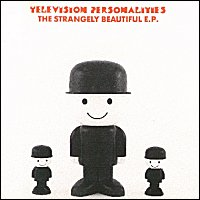

Television Personalities |
 1991 - Fire - BLAZE48T/CD - 12"/CD Songs: Strangely Beautiful Reaching For The Stars Not Even A Maybe Strangely Beautiful (The Chill Out Mix)
The Performing Artistes:
Recorded by Phil (Once More For Me) Vinall. |